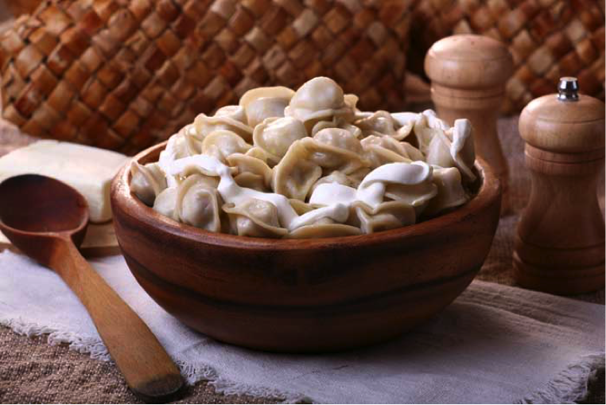
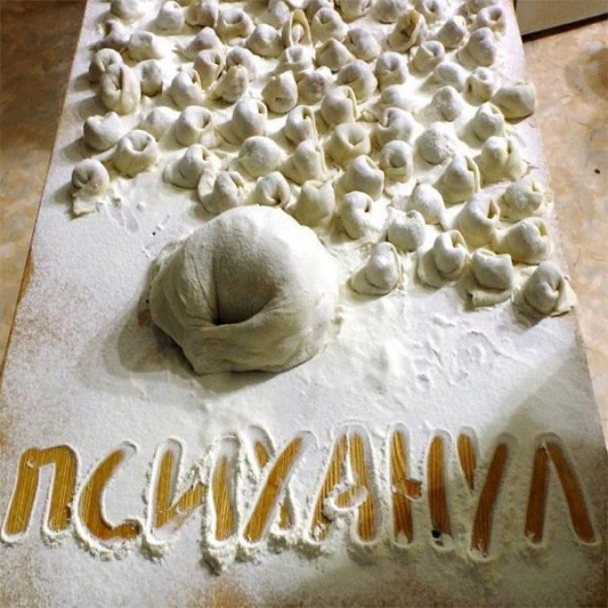

Пельмени в нашей жизни
Кто же первый придумал пельмени? Имя этого человека – неизвестно, но, как считают многие историки кулинарии, он был родом из восточной России. Точнее – из тех мест, где сегодня расположен Коми-Пермяцкий округ. Предки современных пермяков – удмурты и дали пельменям их название. «Пель» - по-удмуртски значит – ухо, а «нянь» - хлеб. Если сложить эти два слова, получится «хлебное ухо» - кусочек мяса, завернутый в тесто, «пель-нянь», который со временем все стали называть «пельмень».
Приколы
Дорогой, я тебе кашу сварила, будешь?
— Умничка, буду, а из чего варила?
— Из пельменей…
— Слушай, а пельмени—то какие вкусные!
— Ну, вкусные…
Но вообще—то нормальные люди в кино ходят с
попкорном!
У гранита науки, как правило, вкус лапши Доширак, реже — пельменей.
Пельменные традиции
Oдной из главных и самых распространенных пельменных традиций является лепка «счастливого пельменя». Для изготовления такого пельменя вместо обычного фарша используется какой-либо другой продукт или даже предмет, например, монетка или пуговица. Каждая из этих начинок имеет свое толкование. Так человек съевший пельмень с перцем встретит любовь, вкусивший пельмень с зеленью будет наполнен радостью, тому, кому попадется цельный тестяной пельмень, ждет счастье, а счастливчику нашедшему пельмень с сахаром предстоит прожить легкий и удачный год. Оказавшаяся же в пельмене монетка, естественно, предвещает богатство.
Множество пельменных традиций и по сей день сохранилось в консервативном Китае. Здесь пельмени всегда ассоциировали с материальным благополучием и здоровым потомством. Связано это с тем, что форма пельменей похожа на старинный серебряный слиток, а их название «цзао цзы» связывают с детьми. По преданию китайские молодожены, у которых не было детей, в новогоднюю ночь клали пельмени в рот, после чего вынимали и убирали их под брачное ложе, тем самым, пророча себе хорошее потомство.
Разновидности пельменей
- Позы
- Подкогыльо
- Бораки
- Дюшпара
- Кундумы
Позы - бурятская национальная разновидность пельменей почти ничем не отличающаяся от мант. Начинка у блюд очень схожая, готовятся позы на пару. Считается, что раньше позы могли делать и с собачатиной, но к счастью эту традицию не встретишь теперь нигде, кроме разве что совсем глухих бурятских поселений.
Подкогыльо- пельмени марийцев, начиненные зайчатиной, свининой или барсучьим мясом и большим количеством лука. Иногда в подкогыльо кладетсяеще и каша. Марийские пельмени изготавливаются в форме узкого полумесяца.
Бораки - армянская разновидность "открытых" пельменей. Предварительно обжаренный на сковороде фарш находится в цилиндре из теста, который не залепляется сверху. Чтобы приготовить такие пельмени, их ставят в кастрюлю в вертикальном положении, плотно пригоняя друг к другу, и заливают небольшим количеством бульона. Едят бораки с подливкой, приготовленной из кислого молока с добавлением тертого чеснока.
Дюшпара - азербайджанский суп с пряными пельменями. Сами пельмени делаются вдвое меньше обычных из тончайшего (1 миллиметр) теста. Традиционную баранину хорошенько перемешивают с травяными приправами: мятой, базиликом, барбарисом, луком, чесноком, поэтому дюшпара отличается своим кислым привкусом. Варят пельмени в два захода. В подсоленной воде до полуготовности, а затем в очень жирном бульоне, благодаря которому и получается в итоге азербайджанский пельменный суп.
Кундумы (кундюбки) - пельмени православной монашеской кухни . Были придуманы в XVI веке как альтернатива обычным пельменям в постном монастырском меню. Очень вкусное блюдо. Кундумы, начиненные грибами, слегка обжаривают, после чего укладывают в глиняный горшок и тушат в грибном отваре под сметаной 20-30 минут. Монашеские пельмени можно начинять рублеными крутыми яйцами, щавелем, рисом и другими растительными видами пищи.